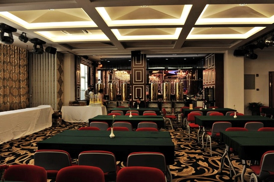
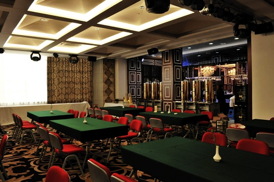
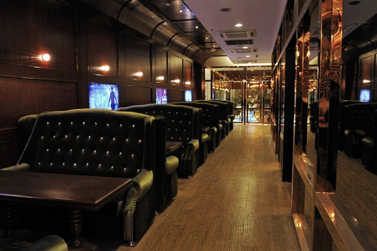
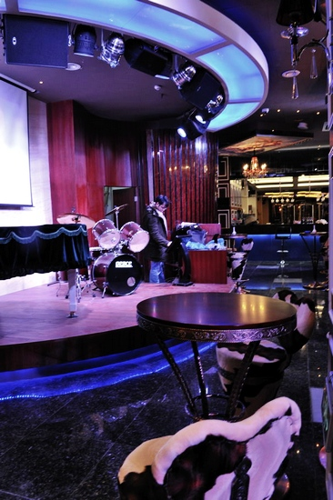

第八届浙江五子棋公开赛8月在温州举办[赛场照]
#1 第八届浙江五子棋公开赛8月在温州举办[赛场照] 作者：有志青年 发表时间：2011-6-15 20:13:48
比赛场地的部分照片


#2 Re:第八届浙江五子棋公开赛8月在温州举办[赛场照] 作者：啊呆 发表时间：2011-6-15 20:23:33
爱五子棋的网速。。。要了亲命了。。。#3 Re:第八届浙江五子棋公开赛8月在温州举办[赛场照] 作者：有志青年 发表时间：2011-6-15 20:23:51


#4 Re:第八届浙江五子棋公开赛8月在温州举办[赛场照] 作者：weigui 发表时间：2011-6-15 20:26:49
谢谢有志！
第八届浙江省五子棋公开赛基本确定在温州举办，等我确定周边的宾馆公布比赛的规程。
虽然规格有许多提升，但我可以肯定地告诉大家，参与比赛的费用应该不会超过180一天每人。
［ 被感动的人 于 2011-6-15 20:28:08 时花20金币送鲜花一朵］
［ 掌棋宣传员 于 2011-6-15 20:39:04 时花20金币送鲜花一朵］
［ 掌棋宣传员 于 2011-6-15 20:39:05 时花20金币送鲜花一朵］
［ 掌棋宣传员 于 2011-6-15 20:39:05 时花20金币送鲜花一朵］
［ 掌棋宣传员 于 2011-6-15 20:39:06 时花20金币送鲜花一朵］
［ 掌棋宣传员 于 2011-6-15 20:39:07 时花20金币送鲜花一朵］
［ 厦门小天 于 2011-6-15 21:30:54 时花20金币送鲜花一朵］
［ 无尽 于 2011-6-15 22:36:43 时花20金币送鲜花一朵］
［ 隐藏菜系 于 2011-6-21 19:10:29 时花20金币送鲜花一朵］
［ 圊籽 于 2011-7-1 11:52:25 时花20金币送鲜花一朵］
#5 Re:第八届浙江五子棋公开赛8月在温州举办[赛场照] 作者：黄药师 发表时间：2011-6-15 20:57:37
相当的豪华啊！！！！！！还有点神秘感#6 Re:第八届浙江五子棋公开赛8月在温州举办[赛场照] 作者：无尽 发表时间：2011-6-15 22:36:36
灰常不错啊
#7 Re:第八届浙江五子棋公开赛8月在温州举办[赛场照] 作者：小丸.net 发表时间：2011-6-15 22:37:35
这次的直播任务。。。。有志，你接是不接。#8 Re:第八届浙江五子棋公开赛8月在温州举办[赛场照] 作者：逆刃 发表时间：2011-6-15 23:04:56
怎么感觉像夜总会~
#9 Re:第八届浙江五子棋公开赛8月在温州举办[赛场照] 作者：极地剑客 发表时间：2011-6-15 23:23:28
很豪华，不去比赛的哥路过围观#10 Re:第八届浙江五子棋公开赛8月在温州举办[赛场照] 作者：小丸.net 发表时间：2011-6-15 23:27:40
贱客，去看MM啊。。。。
［ 极地剑客 于 2011-6-15 23:34:37 时花20金币送鲜花一朵］
#11 Re:Re:第八届浙江五子棋公开赛8月在温州举办[赛场照] 作者：极地剑客 发表时间：2011-6-15 23:34:26
引用：知我者，小丸也
原文由 小丸.net 发表于 2011-6-15 23:27:40 :贱客，去看MM啊。。。。
#12 Re:第八届浙江五子棋公开赛8月在温州举办[赛场照] 作者：奇林 发表时间：2011-6-18 11:00:39
华丽 有点像在KTV#13 Re:第八届浙江五子棋公开赛8月在温州举办[赛场照] 作者：堂堂 发表时间：2011-6-20 12:51:37
环境不错~
#14 Re:第八届浙江五子棋公开赛8月在温州举办[赛场照] 作者：贪嗔痴 发表时间：2011-8-8 9:04:58
温州法兰克福酒店~~我走路过去就十几分钟~~